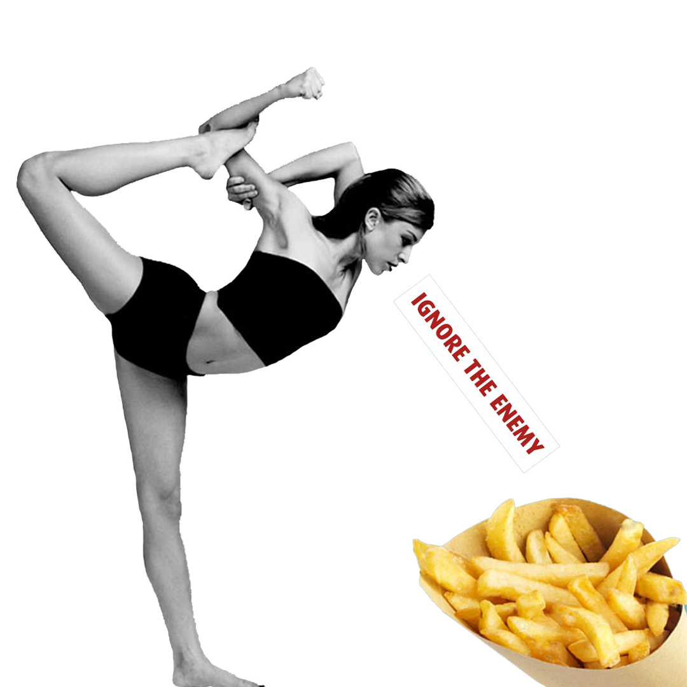
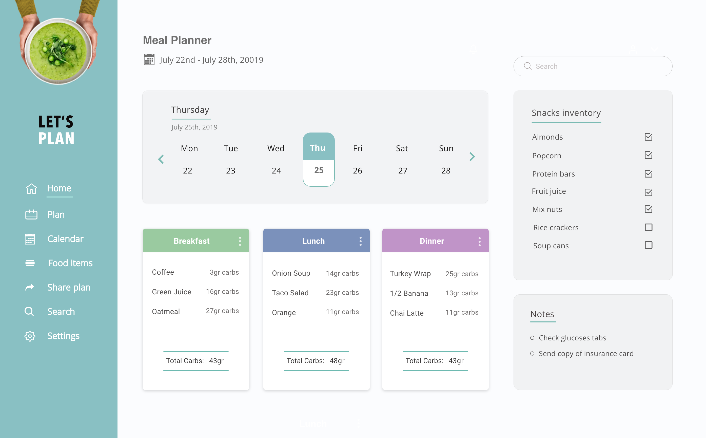

The Enemy

- Overview:
-
Tracking what you eat is one of the most important parts of diabetes management. Young adults often struggle
to self-manage their diabetes during the transition from childhood to adulthood.
This transition, especially for students who leave home and go to college, may be complicated by reliance on fast food, busy schedules, late-night studying, lack
of sleep and alcohol use.
- The Problem:
-
Sending a child off to college is an emotional experience for many parents. When your child has diabetes, it’s bound to be even more overwhelming.
Students with diabetes face a wide range of problems within the academic buildings, particularly navigating diabetes in the dining halls and cafeterias:
- Carbs have the biggest impact on blood sugar levels so it's important to know the amount of carbs in the food in order to get the proper insulin dose.
It's often impossible to access nutritional information and serving sizes, making it hard to count carbs.
- There is limited variety of healthy meals options.
- There is limited access to dining halls during late hours, so students buy their meals from vending machines or settle for unhealthy fast food.
- There is lack of access to cooking facilities.
- The Task:
-
- Design a digital platform that continually motivates students to manage diabetes effectively through meal planning, exercise and social interaction.
- Design a dashboard that gives the parents the access to feel fully involved and informed.
- The Solution:
-
When a student walks into a dining hall and looks at all the buffet-style options, it can be very tempting to pile the plate high with a few options of comfort food.
But when you are armed with a meal plan before you enter the dining hall, you can keep track of how many carbs you can consume per meal and avoid blood sugar swings.
- Parents Dashboard:
-
Every parent knows that healthy eating is the cornerstone of healthy living.
But when it comes to balanced food, college life can be incredibly tough on diabetes management. There is a whole new world of stress levels and eating habits when a student enters college.
As a parent, you need that extra peace of mind to feel assured that your child eats well and has access to nutritious food.
Many dining halls publish their weekly menus in advance so if the student is too busy with school work, parents can help their child in the meal planning process and build for them healthy balanced meals along with all the nutrition information.
